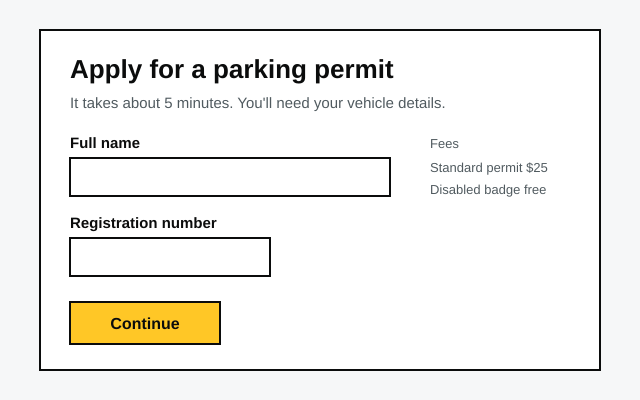

Review a page by leaving a note on the exact words.
Select text and leave a note on it. The note stays attached to those words, and everyone who opens the page sees it.
Think comments in Google Docs, for any web page.
Try it on this page. Select any sentence here, then click the Add note button that appears.
On this page, notes are saved in your browser only. On your own site they're shared.
Why it exists
Feedback by email, in Slack or in a meeting isn't attached to anything. "The intro feels long" could mean one paragraph or the whole section, and with several reviewers the feedback overlaps, repeats itself or disagrees.
With Notis, the reviewer selects the words they mean and leaves a note on them. You get the words and the note together, in one list, without anyone needing an account.
It started as a way to get quick reactions to early prototypes, from people who had no time for a tool.
Notis is Swedish for a short note. Say it noh-tis.
How it works
- Select. A reviewer highlights text and leaves a note.
- Discuss. A side panel lists every note in page order. People reply, and resolve what's done.
- Fix. Open notes are plain JSON. You, a script or an AI assistant can read them, change the page, and mark them resolved.
Pin a note to an image
Some things you can't select. Open the panel, choose Pin on image, then click the spot you mean. The pin stays at that point, even when the image is resized.

Try it on the wireframe above. Pins are saved in your browser only.
Add it to a page
One line before </body>:
<script src="/comments.js" defer></script>Notes are stored by a small serverless function in the same repo. Deploy it to Netlify, set an admin token, and you're done. There's no database and nothing to build.
Setup, options and the API are in the README.
Or ask an agent to do it
Paste this into Claude Code, Codex, Cursor or any coding agent that's working in your site's folder:
Add Notis to this site. Follow the instructions at https://notis.gavinwye.com/install.md
The agent reads install.md, asks you where it should run, adds the script, and checks it works. It asks before it sets up shared storage.
What you get
Anchored to text
Notes find their words again when the page loads, and survive small edits.
Replies
Replies, resolve and reopen, and a toggle for resolved ones.
No accounts
People type a name. You decide who can load the page.
One file, no dependencies
The widget injects its own styles. It works with any site, any framework.
What it doesn't do
- No sign-in. Anyone who can load the page can leave a note. Put review copies behind a password or a preview URL.
- No notifications. Nobody is emailed. You look at the panel or read the API.
- Not for busy pages. It's built for a handful of reviewers, not a public comment section.